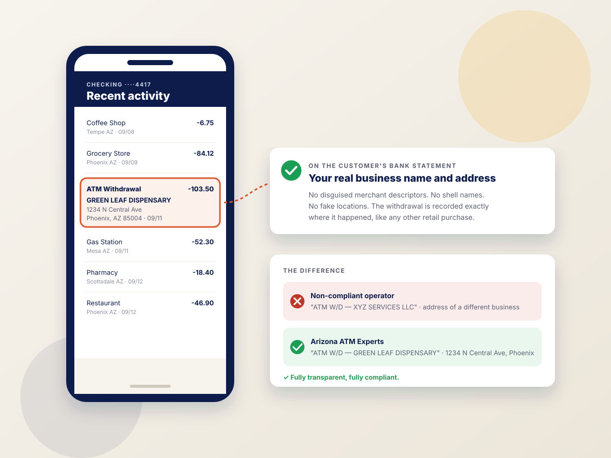

100% compliant ATMs for Arizona dispensaries
Cash is still king in cannabis. We're the largest cannabis ATM company in the country, and every machine we place runs fully compliant — with your dispensary's real name and address showing on your customers' bank statements.
Transparent transactions. Your real name and address on the bank statement.
Some ATM operators put machines in dispensaries under a different merchant name or a disguised address to hide what the business is. That exposes the dispensary and its customers, and it can cost you your banking relationships. We don't do that.
Every ATM we place in a dispensary processes under your actual business name and street address. The line item on your customer's bank statement shows exactly where the withdrawal happened — the same way it would at any other retailer.
- 100% compliant ATM placement and processing
- Real dispensary name and address on every customer bank statement
- No disguised descriptors, shell names, or workarounds
- Accurate statement records for you and your customers

The largest cannabis ATM company in the country
Dispensaries are a specialty for us, not an afterthought. We understand the cash volume, the compliance expectations, and the service level a licensed dispensary needs.
What your dispensary gets
Compliant processing
Transparent transactions under your real business name and address, so your ATM never becomes a compliance problem.
Cash that keeps up
We supply and load the cash, size the cassettes to your volume, and monitor levels so the machine doesn't run dry on a Friday night.
Real-time reporting
See cash remaining, surcharge revenue, and every transaction from a web or mobile login.
Dedicated support
A dedicated account representative who knows your machine and your location.
Dispensary ATMs earn more, so we share more
Dispensaries run cash-only, which makes an on-site ATM one of the highest-volume machines we place. That volume lets us offer dispensaries some of the most aggressive revenue share options in the industry.
Options sized to your volume
We analyze your foot traffic and transaction counts and build a revenue share around them. Higher volume means a stronger split for your dispensary.
Paid monthly, on time
Your split is deposited each month by the 10th of the following month, backed by a full transaction report you can verify against your online reporting login.
Nothing out of pocket
We supply the machine, the cash, the installation, and the monitoring. Your dispensary provides a standard 110v outlet and collects a share of every surcharge.
We've been doing this a long time, and it shows
Dispensary ATMs are not a side business for us. We've been placing and servicing ATMs in dispensaries for 14 years, and we've built our operation around the two things a dispensary can't afford: downtime and an empty machine.
- Over 99% uptime across our dispensary ATMs, so your customers always have a working machine when they walk in
- Cash load prediction software that forecasts each location's withdrawals and schedules refills before the cash runs low, so our ATMs never run empty
- 14 years of experience with the cash volume, compliance expectations, and service level licensed dispensaries require
- Real-time monitoring that flags cash levels and machine errors the moment they happen
Dispensary ATMs across Arizona
We're based in the Phoenix metro area and place, service, and cash-load ATMs statewide. If your business is in Arizona, we can help.
Dispensary ATM FAQs
Are your dispensary ATMs compliant?
Yes. Our dispensary ATMs are 100% compliant. Every transaction is processed transparently under your dispensary's real business name and address, so that is exactly what appears on your customers' bank statements — no disguised merchant descriptors, no shell company names, and no workarounds that put your license or your banking relationships at risk.
What shows up on the customer's bank statement?
Your dispensary's actual name and street address. The withdrawal is recorded on the cardholder's bank statement exactly where it happened, the same way it would be for any other retail business.
Does it cost my dispensary anything?
Not with free placement. We supply the machine, install it, load and manage the cash, and monitor it around the clock. You provide a standard 110v outlet, and we provide you with fair revenue share options.
How much cash can the ATM hold?
It depends on the model and your volume. Our Genmega machines support up to four 2,000-note cassettes, and we size the cash load and refill schedule to your traffic so the machine stays stocked through your busiest days.
Do you serve dispensaries outside the Phoenix area?
Yes. We place and service dispensary ATMs across Arizona, including Tucson, Flagstaff, Prescott, Sedona, and the entire Phoenix metro.
Put a compliant ATM in your dispensary
Tell us about your location and volume. We'll recommend the right machine, cash plan, and revenue share for your dispensary.